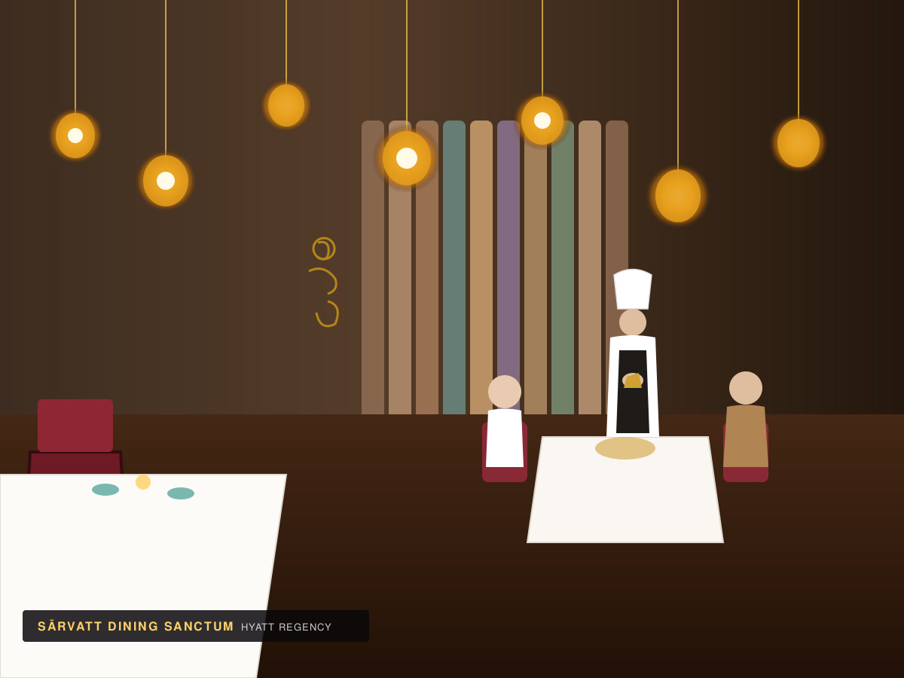
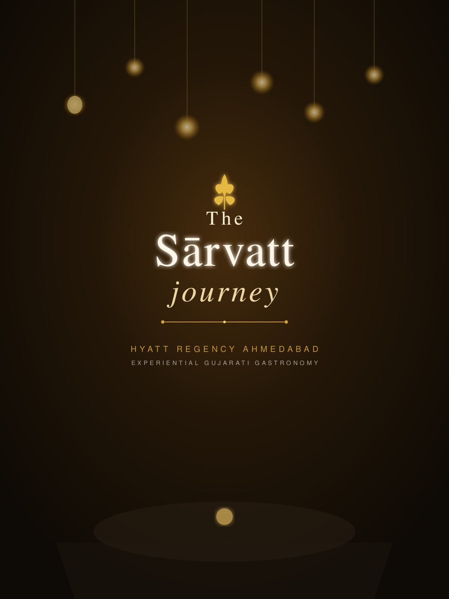
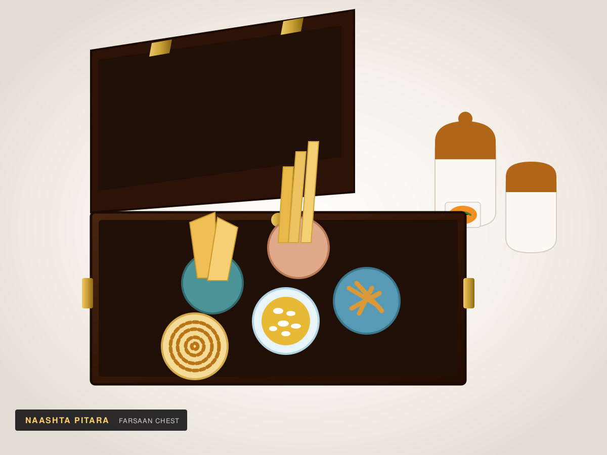
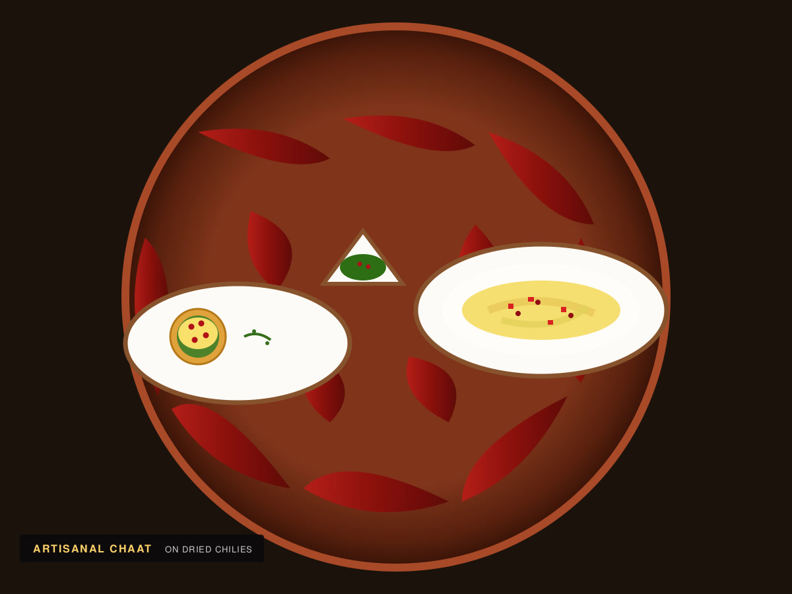
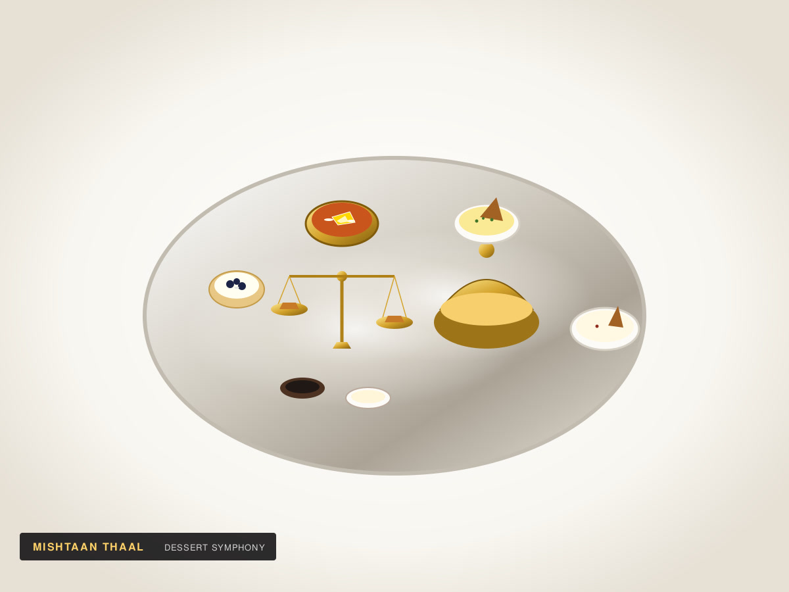

An experiential Gujarati dining journey inspired by the culinary traditions of Gujarat and Rajasthan.
The name Sārvatt originates from a Sanskrit word meaning “precious”—reflecting a cherished gastronomic encounter that transcends a conventional thali meal.
Sārvatt is an experiential Gujarati restaurant whose concept incorporates the rich culinary traditions of Gujarat and Rajasthan.
Rather than serving a single hurried plate, Sārvatt's menu draws inspiration from the diverse regional legacies of western India:
The culinary concept deliberately moves beyond a conventional Gujarati thali by focusing on:
Each course is narrated tableside by staff to share its cultural heritage and ancestral roots.
Honouring traditional western Indian recipes passed down through generations.
Contemporary presentation of traditional influences in brass, silver, and copper ware.
Attentive, personalized service embodying the timeless Indian ethos of Atithi Devo Bhava.

Sārvatt is a dedicated vegetarian restaurant. Vegetarian and Jain standards are a cornerstone of its culinary identity, ensuring purity without compromising on gastronomic depth.
In December 2023, Sārvatt was reported as having received certification from the Sattvik Council of India after its production facility was evaluated for conformity with traditional vegetarian and Jain dietary practices.
Additionally, Sattvik Certifications has reported that Sārvatt completed a fourth consecutive annual certification audit, underscoring its enduring adherence to verified vegetarian and Jain culinary standards.
Dining at Sārvatt is structured as an intentional culinary journey rather than simply ordering a conventional meal. Select your preferred sequence below.
4-Course Meal
A curated introduction to Sārvatt’s seasonal farsan, regional main course, comforting grains, and dessert.
7-Stage Culinary Journey
A seven-stage exploration across western India’s savouries, palate cleansers, regional entrées, and confectionery.
9-Stage Culinary Journey
The complete, immersive gastronomic odyssey encompassing all nine sequential stages from heirloom snacks to the golden scale dessert.
Pricing & Tax Terms: Currently published menu prices are shown. Prices are before applicable government taxes.
Service Charge Notice: A 5% service charge is levied. The service charge is discretionary and can be removed on request.
The menu highlights snacks, fried and steamed savouries, indigenous-botanical beverages, palate cleansers, regional entrées, khichdi, kadhi, and a final sweet course.

Stage 01A collection of traditional dry snacks presented in an heirloom wooden chest. Includes hand-coiled spiral chakri, standing crisp fafda, spicy gathiya, and puffed mamra with ceramic barnis of fresh papaya-chili sambharo.
A silver-tiered tower showcasing fresh hot and crisp regional savouries, delicate beetroot cutlets, and fresh mint-coriander and sweet date chutneys.

Stage 03Deconstructed chaat presented over an aromatic bed of whole sun-dried red chilies in ceramic boat bowls. Layered with whisked yoghurt, golden nylon sev, and ruby pomegranate arils.
A traditional heavy brass canister opened tableside to reveal steaming soft dhokla, rolled khandvi with mustard tempering, and fresh green chili accents.

Stage 05A refreshing frozen treat—artisanal kulfi popsicle dipped in sweet rabdi syrup—designed to refresh the palate between savoury courses and the main feast.
Freshly turned millet rotla with white butter, puran poli, hot puffed puris, and khoba roti served alongside spiced turmeric rice pyramids, kadhi, and kathol.
Comforting Vaghareli Khichdi crowned with crispy papad shards, served with spiced sweet-and-sour Gujarati kadhi and a generous tableside pour of warm golden cow ghee.
A grand dessert finale in a fluted silver tray with swirling dry-ice aromatics, featuring a functioning miniature brass Tarazu (balance scale) with regional confections, shrikhand tartlets, and 24K gold vark halwa.
The traditional digestif closure: artisanal botanical seeds, roasted fennel, dried dates, and signature chilled paan elixir shots served over shaved ice.
An authentic glimpse into our restaurant dining sanctum, master tableside service, and regal western Indian course presentations.
Experience the sensory harmony of our tableside journey—from heirloom dry-snack chests to royal dessert presentations.
Every course is presented and explained by our culinary team, sharing the regional origin and ancestral techniques of western India.
Traditional brass canisters, fluted silver trays, copper platters, and custom wooden chests crafted specifically for Sārvatt.
Strict observance of vegetarian and Jain culinary practices verified by the Sattvik Council of India for four consecutive audits.
Traditional coolers and artisanal botanical infusions curated to accompany the meal.
Tangy indigenous wild mangosteen cooler with cumin and rock salt.
Spiced green mango cooler with roasted cumin and fresh mint.
Freshly brewed artisanal roast.
Select estate teas and traditional masala chai.
Chilled infused tea with lemon and herbs.
Selection of carbonated soft drinks.
Packaged natural drinking water.
Agate-stone inspired botanical blend with floral notes.
Artisanal citrus infusion named after traditional craft dyeing.
Gilded Rajasthani heritage cooler with saffron essence.
Cooling lapis-inspired herbal and berry nectar.
Inspired by the sacred desert tree, featuring earthy spiced undertones.
Shimmering tender coconut and crushed cardamom cooler.
Menu prices may change seasonally. Please verify current pricing before ordering. All prices subject to applicable government taxes and a 5% discretionary service charge.
Dining cost indications reported by major restaurant listing platforms:
Swiggy Dineout listing indication
Zomato / District listing indication
Restaurant Guru platform indication
Note on Third-Party Price Estimates: These figures are from different platforms and are not directly comparable. The structured seven- and nine-course dining experiences (such as Kaner at ₹1,800/person and Aakdo at ₹2,400/person before taxes) can have a different cost from casual ordering. These estimates are provided for general guidance and do not represent guaranteed bills.
| Day | Lunch Session | Dinner Session |
|---|---|---|
| Monday | 12:30 PM – 2:30 PM* | 7:00 PM – 10:30 PM |
| Tuesday | 12:30 PM – 2:30 PM* | 7:00 PM – 10:30 PM |
| Wednesday | 12:30 PM – 2:30 PM* | 7:00 PM – 10:30 PM |
| Thursday | 12:30 PM – 2:30 PM* | 7:00 PM – 10:30 PM |
| Friday | 12:30 PM – 2:30 PM* | 7:00 PM – 10:30 PM |
| Saturday | 12:30 PM – 2:30 PM | 7:00 PM – 10:30 PM |
| Sunday | 12:30 PM – 2:30 PM | 7:00 PM – 10:30 PM |
*Weekday Lunch Service Note: Lunch availability may vary. Current third-party listings disagree about weekday lunch service, so please verify directly with the restaurant before visiting on weekdays.
The restaurant setting is inspired by a timeless era of western India, harmoniously marrying heritage warmth with contemporary five-star hotel styling.
Ratings compiled from recognized independent dining and review directories:
Reviews from diners on Tripadvisor in 2026 frequently highlight consistent themes:
Diners frequently describe Sārvatt as distinctly more than a normal meal because service staff narrate the regional heritage of each dish and the dining sequence is purposefully designed as an engaging culinary journey.
An established Tripadvisor distinction awarded on the basis of consistently high traveler feedback, ratings, and Tripadvisor's recognition criteria.
Tripadvisor Recognized ListingEvaluated by the Sattvik Council of India for conformity with traditional vegetarian and Jain dietary practices, with a reported fourth consecutive annual audit completed.
Sattvik Council of India EvaluationPublic listings have historically associated Sārvatt with Chef Surya Narayana.
Meanwhile, recent 2026 diner feedback on Tripadvisor frequently mentions several current culinary and service team members who guide the tableside journey, including Chef Chandan, Dhruvil, Manisha, Mayna, and other attentive staff.
Note: Distinguishing established public associations from current review mentions; specific culinary leadership roles may evolve over time.Table bookings available online and via concierge.
Full indoor air-conditioned dining room.
Comfortable group dining with spacious arrangements.
High-speed hotel wireless access.
Elevator and ramp access throughout the property.
Seamless entrance and corridor transit.
Hotel entrance valet and secure on-site parking.
Available on request for infants and toddlers.
Major domestic and international credit/debit cards.
Environment Note: Zomato describes Sārvatt's environment as relatively quiet and family-oriented, with ample space for large-group celebrations.
Sārvatt is housed on the second floor of Hyatt Regency Ahmedabad—a premier five-star business hotel located along Ashram Road directly beside the Sabarmati Riverfront. Recent corporate reporting notes the hotel features 270 rooms following a 59-room expansion.
Approx. 5-minute walk from the hotel.
Approx. 0.7 km away with walking and cycling tracks.
Historic national landmark along the riverfront.
Prominent sports and event complex.
Historical university founded by Mahatma Gandhi.
Scenic elevated perspective overlooking Sabarmati River.
Airport Proximity: Hyatt describes the hotel as less than 7 km from Sardar Vallabhbhai Patel International Airport (AMD), while third-party travel listings give figures around 9–11 km depending on the chosen traffic routing.
Hyatt Regency Ahmedabad · Second Floor
Connect directly with the restaurant team or hotel front desk.
Kindly submit your dining party details or call +91 75748 26620.